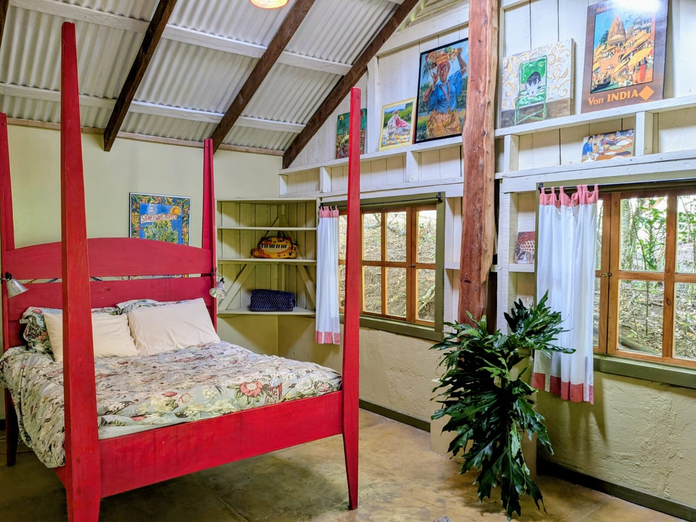
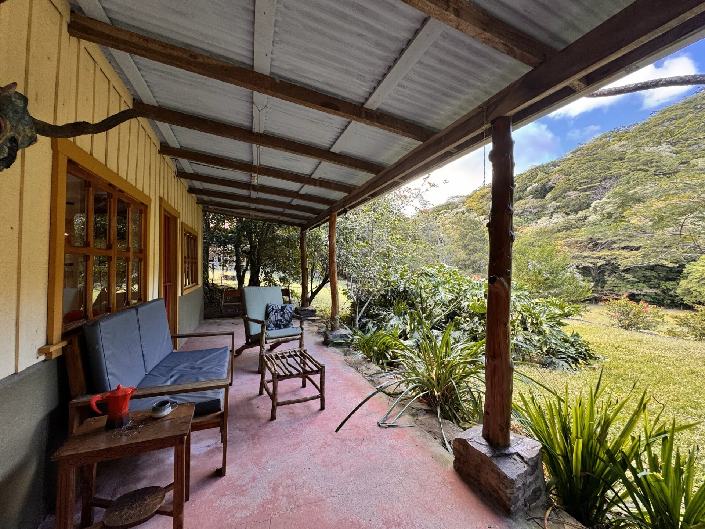
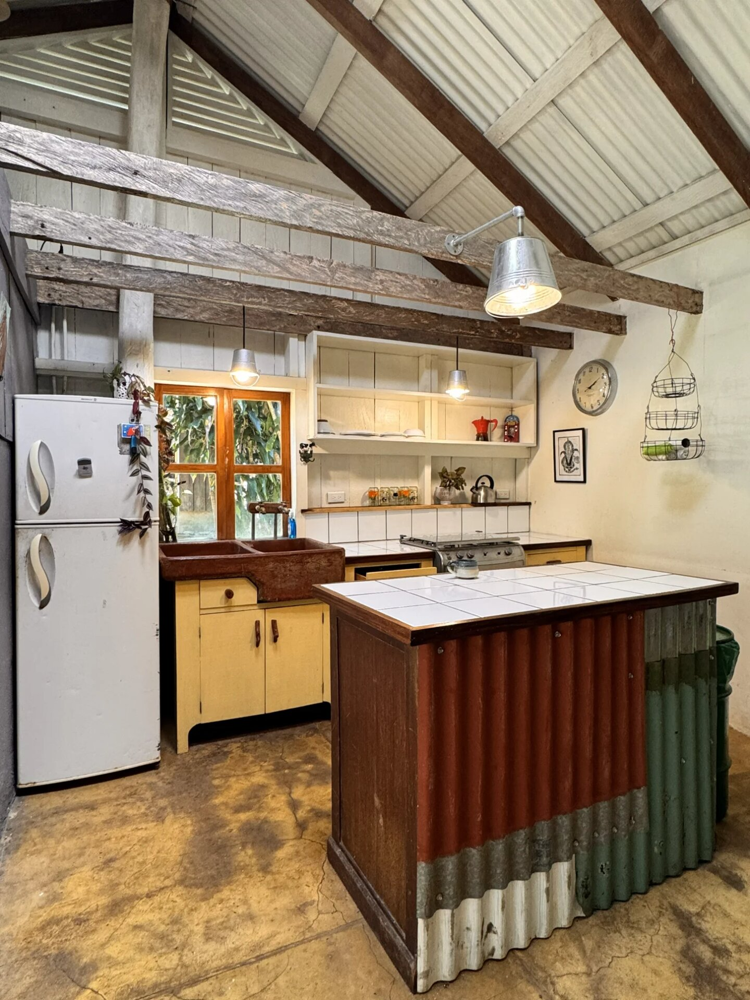
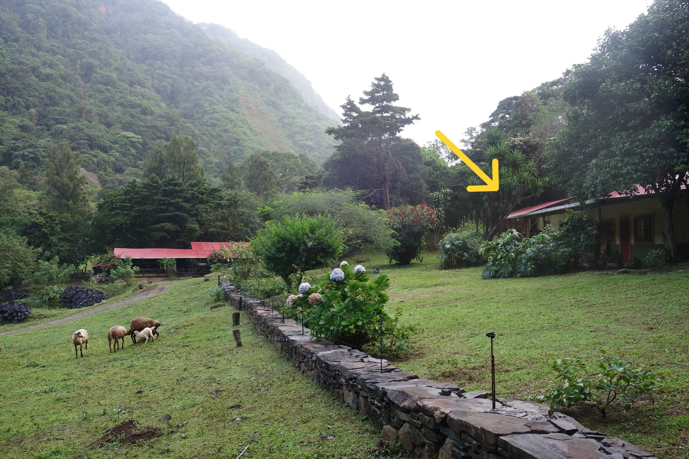
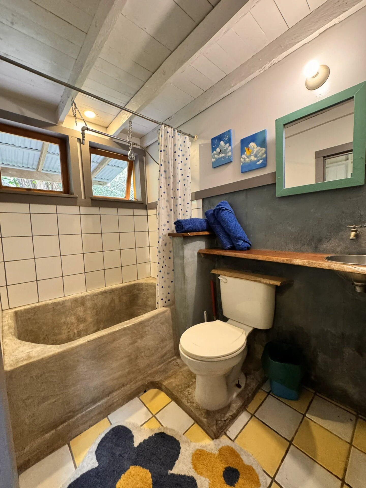
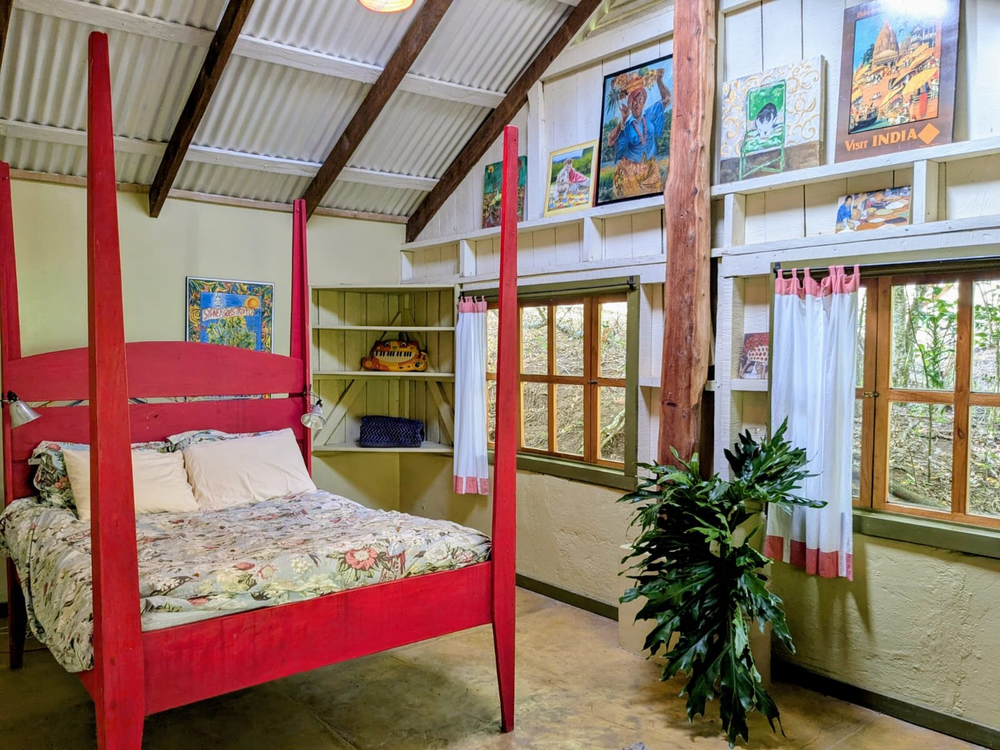
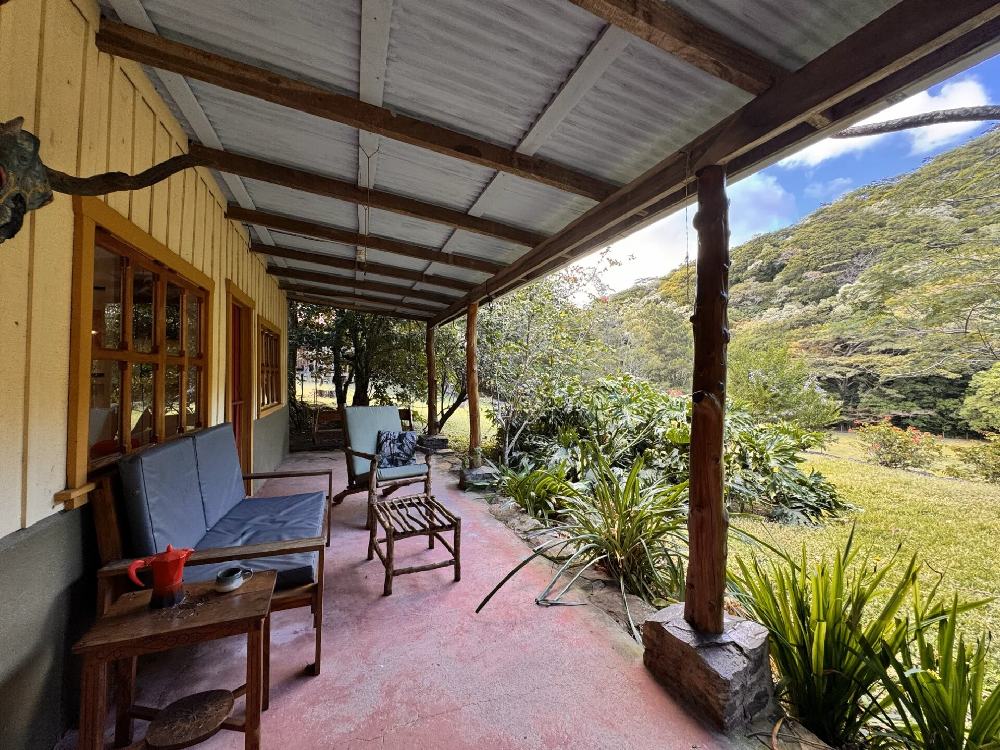
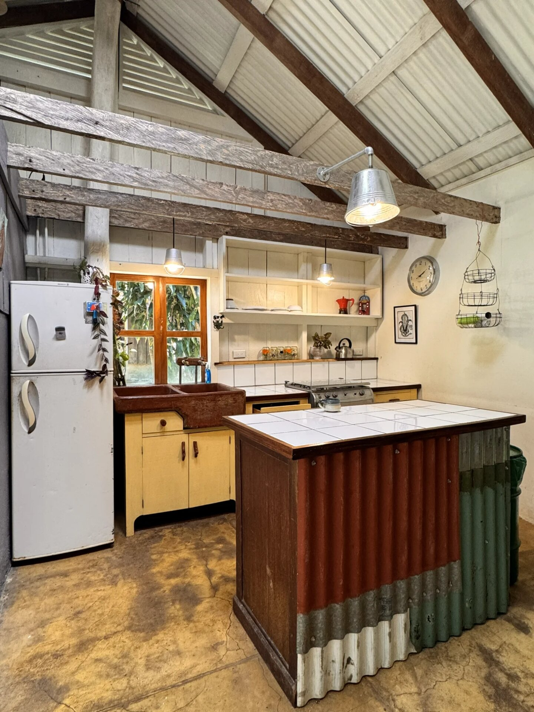
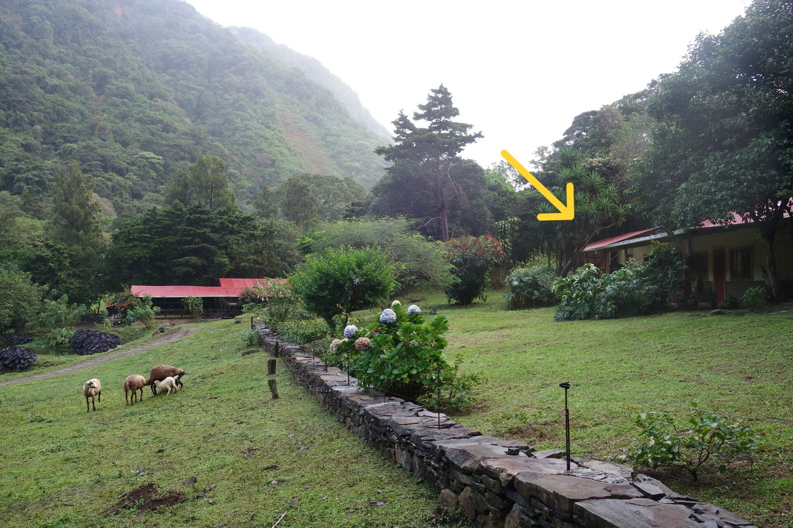
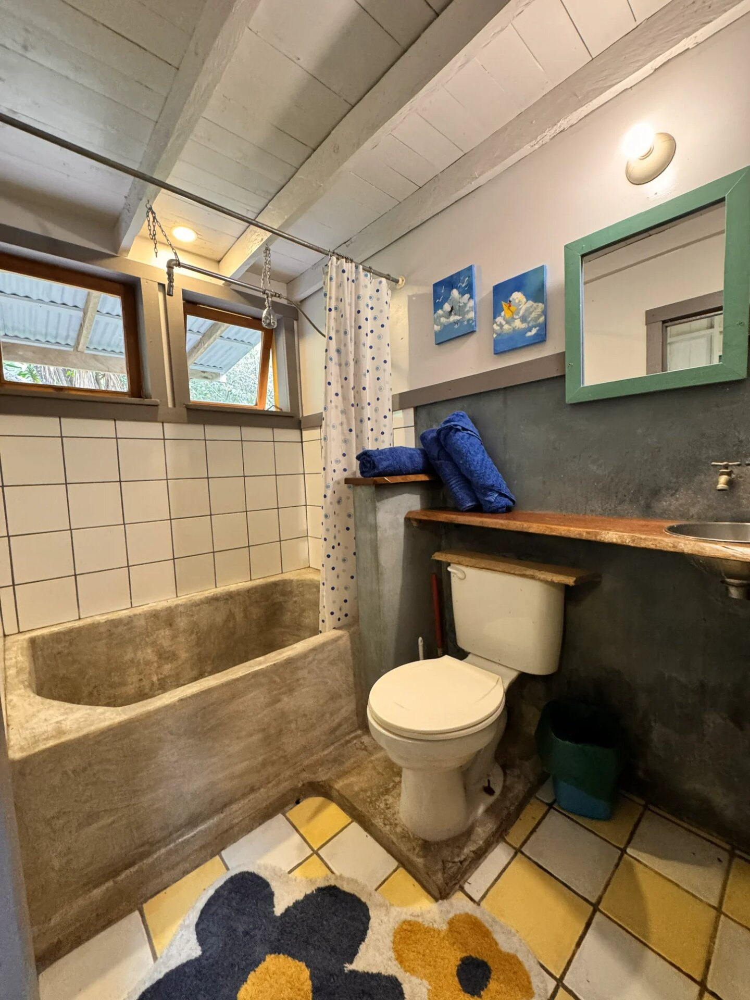

About La Casita
La Casita is the original farmhouse at Finca la Querencia, a sustainable homestead farm combining dairy and animal husbandry with aquaculture, organic vegetables, coffee and more. We are located at the end of the road in a private valley, very close yet completely removed from the tourist hustle and bustle of Monteverde.
La Casita has been rebuilt and updated, yet still retains its original Tico charm. The house is full of art, both local (very) and from afar. It is funky and eclectic. Because it is the original house, La Casita enjoys a protected spot with a great view out over the gardens and pastures and the jungle canopy rising up the cliff edge beyond.
La Casita features a large kitchen/living room, a spacious bedroom with double bed, and a bathroom with both tub and shower (designed for two). The house is equipped with solar hot water heating.
TRANSPORTATION: We strongly recommend that you have a car, preferably one with All-Wheel Drive (AWD). If you do not have a car please contact us so we can help you assess if this is a suitable location for you. While we are not far from Monteverde, the walk to town is a substantial uphill hike, though enthusiastic hikers will find it quite enjoyable. Taxis will come to the farm, but the cost is typically around $20 each way.
Rental Information
Included:
• Water, electricity, internet
• Weekly cleaning
• 6 month minimum rental
• Renters fill gas tanks for stove
WhatsApp: 8372-3431 or 8370-4014
Email: murthantim@gmail.com
Photo Gallery
 









Explore Farm Amenities
La Casita is part of Finca la Querencia, which offers organic gardens, swimming pond, hot tub, community rancho, farm products, and more!
Visit Farm PageSobre La Casita
La Casita es la casa original de Finca la Querencia, una granja sostenible que combina ganadería lechera y cría de animales con acuicultura, vegetales orgánicos, café y más. Estamos ubicados al final del camino en un valle privado, muy cerca pero completamente alejados del bullicio turístico de Monteverde.
La Casita ha sido reconstruida y actualizada, pero aún conserva su encanto Tico original. La casa está llena de arte, tanto local (muy) como de lugares lejanos. Es peculiar y ecléctica. Debido a que es la casa original, La Casita disfruta de un lugar protegido con una excelente vista sobre los jardines y pastos y el dosel de la selva que se eleva por el borde del acantilado.
La Casita cuenta con una amplia cocina/sala de estar, un espacioso dormitorio con cama doble y un baño con bañera y ducha (diseñado para dos). La casa está equipada con calentador solar de agua.
TRANSPORTE: Recomendamos encarecidamente que tenga un automóvil, preferiblemente uno con tracción en las cuatro ruedas (AWD). Si no tiene un automóvil, contáctenos para ayudarlo a evaluar si esta es una ubicación adecuada para usted. Aunque no estamos lejos de Monteverde, la caminata al pueblo es una subida considerable, aunque los excursionistas entusiastas la encontrarán bastante agradable. Los taxis vienen a la finca, pero el costo es típicamente alrededor de $20 por trayecto.
Información de Alquiler
Incluido:
• Agua, electricidad, internet
• Limpieza semanal
• Alquiler mínimo de 6 meses
• Inquilinos llenan tanques de gas
WhatsApp: 8372-3431 o 8370-4014
Email: murthantim@gmail.com
Galería de Fotos
Explora las Comodidades de la Finca
La Casita es parte de Finca la Querencia, que ofrece jardines orgánicos, estanque para nadar, jacuzzi, rancho comunitario, productos de la finca, ¡y más!
Visitar Página de la Finca